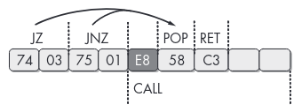

ptrace based self-debugging binaries
These are two self-debugging ptrace (or nanomite, as you prefer) based challenges I made for 0xl4augh CTF.
ptrace is a system call that allows a process to trace/debug another process, it is used by debuggers and tracing tools like strace.
Since it can be used to read/write the memory and the CPU context of another process, it can also be used for all kind of fun stuff like hot patching.
Another interesting property of ptrace that often makes it used as an anti-debugging technique is that a process can only be traced by one and only one process.
1. nano
This challenge is meant as an introduction to nanomites, there’s also a bit of code obfuscation. It is unstripped, mainly to trick the reverser into some rabbit holes, the idea was to force people out of the decompiler and briefly look at the disassembly. There binary is here let’s dive into it.
1.1 Obfuscation
Opening the binary, we notice the main function doesn’t make much sense:

This is due to a common obfuscation technique with JZ/JNZ to produce a non-conditionnal jump but still confuse the disassembler.
The method is well described in the great Practical Malware Analysis book, which i highly recommend everyone to read.

We can get rid of it by looking for the JZ +5; JNZ +3; CALL pattern and NOPing it:
data = open("nano", "rb").read()
# nop patterns
data = data.replace(b"\x74\x03\x75\x01\xe8", b"\x90\x90\x90\x90\x90")
open("nano_fixed", "wb").write(data)
This produces a new binary where the code actually decompiles fine:
1.2 Fake Flag
Since this is a CTF, we are first after the flag, we ignore the noise and jump into the check function:
It is pretty straightforward: it goes over a 0x24 char input flag, xoring each char with a KEY and verifies that the result is what is in the flag global variable.
We can extract both KEY and flag, xor them together and that should give us the actual input flag:
>>> from pwn import xor
>>> KEY = b'\x7b\x3d\x14\x43\x01\x43\x5e\x2f\x27\x6a\x47\x4a\x1b\x10\x53\xf6\xac\xbf\xbc\x93\xb6\xde\xde\xce\xb4\xb3\xc9\xfc\x9b\xc7\xc1\x10\x2e\x4e\x2a\x39'
>>> flag = b'\x0c\x5c\x60\x20\x69\x63\x64\x0f\x4f\x1e\x33\x3a\x68\x2a\x7c\xd9\xd5\xd0\xc9\xe7\xc3\xf0\xbc\xab\x9b\xd7\x98\x8b\xaf\xb0\xf8\x47\x49\x16\x49\x68'
>>> xor(KEY, flag)
b'watch : https://youtu.be/dQw4w9WgXcQ'
clearly this is not the flag we’re looking for:
% ./nano 'watch : https://youtu.be/dQw4w9WgXcQ'
no
1.3 Self-Debugging
Going back to main, the function func_00101189, turns out to be a wrapper around the ptrace syscall (syscall 0x65 is the sys_ptrace on x86_64 linux), we can rename it and
apply proper typing:

So what’s happening is that the process will fork and the parent will attach the child with ptrace:
┌──────────────────────────────────┐
│ │
│ Parent process │
│ │
└───────┬──────────────────────────┘
│
│
debug with ptrace
│
│
│ ┌────────────────────────────────────┐
│ │ │
└───────────────►│ Child Process │
│ │
└────────────────────────────────────┘
then everytime the child segfaults, the parent will compute a byte value, update the child’s registers and resume its execution:
Parent catches SIGSEGV
┌──────────────────────────────────┐
│ │
│ Parent process │◄───────────────────┐
│ │ │
└─────────┬────────────────────────┘ │
│ │
│ │
│ │
│ SIGSEGV
Compute byte value and update │
Child's R12 register │
│ │
│ │
Resume child execution │
│ │
│ │
│ │
│ ┌──────────────────────────────┴─────┐
│ │ │
└─────────────►│ Child Process │
│ │
└────────────────────────────────────┘
Now if we you look at the check disassembly, we can see that the XOR key is stored in register R12 and that in the middle of the XOR loop, there’s a move from address 0.
This triggers the segfault and the beauty is that the decompiler doesn’t give any hint about it.
Clearly now, the child crashes in the middle of the XOR loop and the parent replaces the key before resuming execution.
It does so by incrementing RIP by 8 before continuing, because the faulty instruction (mov r11, qword ptr [0]) is 8 bytes.
1.4 Solving
We know how the parent computes the correct key so we can just do the same:
flag = bytearray(b'\x0c\x5c\x60\x20\x69\x63\x64\x0f\x4f\x1e\x33\x3a\x68\x2a\x7c\xd9\xd5\xd0\xc9\xe7\xc3\xf0\xbc\xab\x9b\xd7\x98\x8b\xaf\xb0\xf8\x47\x49\x16\x49\x68')
for rnd in range(1, len(flag)+1):
k = ((rnd * 0x8) & 0xff ^ 0xca | (rnd >> 5)) ^ 0xfe
flag[rnd-1] ^= k
print(flag)
1.5 Solving with strace
We’ve mentionned earlier that strace uses ptrace and that a process can only be ptraced one.
This mean that we cannot strace the child, but we can still strace the parent and use that to dump the PTRACE_SETREGS calls:
% strace ./nano aaaaaaaaaaaaaaaaaaaaaaaaaaaaaaaaaaaa 2>&1 | grep PTRACE_SETREGS
ptrace(PTRACE_SETREGS, 10574, {r15=0x7f2746a15000, r14=0x5604d7806dd8, r13=0x7ffcddf96000, r12=0x7ffc9286a83c, rbp=0x7ffcddf95db0, rbx=0x7ffcddf95fe8, r11=0x7f2746943200, r10=0x7f27467ed328, r9=0x7f27467db740, r8=0, rax=0x7b, rcx=0x7ffcddf97906, rdx=0x5604d78070a0, rsi=0, rdi=0xfffffffffffffffa, orig_rax=0xffffffffffffffff, rip=0x5604d7804225, cs=0x33, eflags=0x10206, rsp=0x7ffcddf95d80, ss=0x2b, fs_base=0x7f27467db740, gs_base=0, ds=0, es=0, fs=0, gs=0}) = 0
ptrace(PTRACE_SETREGS, 10574, {r15=0x7f2746a15000, r14=0x5604d7806dd8, r13=0x7ffcddf96000, r12=0x7ffc9286a824, rbp=0x7ffcddf95db0, rbx=0x7ffcddf95fe8, r11=0x7f2746943200, r10=0x7f27467ed328, r9=0x7f27467db740, r8=0, rax=0x3d, rcx=0x7ffcddf97906, rdx=0x5604d78070a0, rsi=0, rdi=0xfffffffffffffffa, orig_rax=0xffffffffffffffff, rip=0x5604d7804225, cs=0x33, eflags=0x10202, rsp=0x7ffcddf95d80, ss=0x2b, fs_base=0x7f27467db740, gs_base=0, ds=0, es=0, fs=0, gs=0}) = 0
ptrace(PTRACE_SETREGS, 10574, {r15=0x7f2746a15000, r14=0x5604d7806dd8, r13=0x7ffcddf96000, r12=0x7ffc9286a82c, rbp=0x7ffcddf95db0, rbx=0x7ffcddf95fe8, r11=0x7f2746943200, r10=0x7f27467ed328, r9=0x7f27467db740, r8=0, rax=0x14, rcx=0x7ffcddf97906, rdx=0x5604d78070a0, rsi=0, rdi=0xfffffffffffffffa, orig_rax=0xffffffffffffffff, rip=0x5604d7804225, cs=0x33, eflags=0x10206, rsp=0x7ffcddf95d80, ss=0x2b, fs_base=0x7f27467db740, gs_base=0, ds=0, es=0, fs=0, gs=0}) = 0
ptrace(PTRACE_SETREGS, 10574, {r15=0x7f2746a15000, r14=0x5604d7806dd8, r13=0x7ffcddf96000, r12=0x7ffc9286a814, rbp=0x7ffcddf95db0, rbx=0x7ffcddf95fe8, r11=0x7f2746943200, r10=0x7f27467ed328, r9=0x7f27467db740, r8=0, rax=0x43, rcx=0x7ffcddf97906, rdx=0x5604d78070a0, rsi=0, rdi=0xfffffffffffffffa, orig_rax=0xffffffffffffffff, rip=0x5604d7804225, cs=0x33, eflags=0x10206, rsp=0x7ffcddf95d80, ss=0x2b, fs_base=0x7f27467db740, gs_base=0, ds=0, es=0, fs=0, gs=0}) = 0
ptrace(PTRACE_SETREGS, 10574, {r15=0x7f2746a15000, r14=0x5604d7806dd8, r13=0x7ffcddf96000, r12=0x7ffc9286a81c, rbp=0x7ffcddf95db0, rbx=0x7ffcddf95fe8, r11=0x7f2746943200, r10=0x7f27467ed328, r9=0x7f27467db740, r8=0, rax=0x1, rcx=0x7ffcddf97906, rdx=0x5604d78070a0, rsi=0, rdi=0xfffffffffffffffa, orig_rax=0xffffffffffffffff, rip=0x5604d7804225, cs=0x33, eflags=0x10202, rsp=0x7ffcddf95d80, ss=0x2b, fs_base=0x7f27467db740, gs_base=0, ds=0, es=0, fs=0, gs=0}) = 0
ptrace(PTRACE_SETREGS, 10574, {r15=0x7f2746a15000, r14=0x5604d7806dd8, r13=0x7ffcddf96000, r12=0x7ffc9286a804, rbp=0x7ffcddf95db0, rbx=0x7ffcddf95fe8, r11=0x7f2746943200, r10=0x7f27467ed328, r9=0x7f27467db740, r8=0, rax=0x43, rcx=0x7ffcddf97906, rdx=0x5604d78070a0, rsi=0, rdi=0xfffffffffffffffa, orig_rax=0xffffffffffffffff, rip=0x5604d7804225, cs=0x33, eflags=0x10212, rsp=0x7ffcddf95d80, ss=0x2b, fs_base=0x7f27467db740, gs_base=0, ds=0, es=0, fs=0, gs=0}) = 0
[...]
we just have to read the low byte of r12 (the rest of the value is for confusion), and we have our key:
% strace ./nano aaaaaaaaaaaaaaaaaaaaaaaaaaaaaaaaaaaaaaaaaaaaa 2>&1 | grep PTRACE_SETREGS | sed 's/^.*r12=[^ ]*\(..\), .*$/\1/' | xargs
3c 24 2c 14 1c 04 0c 74 7c 64 6c 54 5c 44 4c b4 bc a4 ac 94 9c 84 8c f4 fc e4 ec d4 dc c4 cc 35 3d 25 2d 15
% python
>>> from pwn import xor
>>> xor(b'\x0c\x5c\x60\x20\x69\x63\x64\x0f\x4f\x1e\x33\x3a\x68\x2a\x7c\xd9\xd5\xd0\xc9\xe7\xc3\xf0\xbc\xab\x9b\xd7\x98\x8b\xaf\xb0\xf8\x47\x49\x16\x49\x68', bytes.fromhex("3c 24 2c 14 1c 04 0c 74 7c 64 6c 54 5c 44 4c b4 bc a4 ac 94 9c 84 8c f4 fc e4 ec d4 dc c4 cc 35 3d 25 2d 15"))
b'0xL4ugh{3z_n4n0mites_t0_g3t_st4rt3d}'
2. dance
The binary, sources and solve script for dance are available here.
It uses the same concept, but will use ptrace to modify the actual code of the child instead of registers.
Again it starts by forking and attaching:
undefined8 main(int args,char **argv)
{
uint status;
__pid_t pid;
if (args == 2) {
pid = fork();
if (pid == 0) {
/* child: do something */
lets_go(argv[1]);
}
/* parent: attach child */
ptrace(PTRACE_ATTACH,(long)pid,0,0);
while (waitpid(pid,(int *)&status,0), (status & 0x7f) != 0) {
if (status != 0xffff) {
ptrace(PTRACE_CONT,(long)pid,0,0);
}
}
return 0;
}
printf("usage: %s <flag>\n",*argv);
/* WARNING: Subroutine does not return */
exit(1);
}
2.1 lets_go child
lets_go will fork once more (so stracing the parent won’t show anything relevant), decrypt a shared library using chacha20 and call the dance_with_me flag check function from this library, easy.

we can extract the lib like this:
from Crypto.Cipher import ChaCha20
from pwn import u64
with open("dance", "rb") as fp:
# get libsize
fp.seek(0x40a0)
libsize = u64(fp.read(8))
# lib data
fp.seek(0x40c0)
libdata_enc = fp.read(libsize)
c = ChaCha20.new(key=bytes.fromhex("48656c6c6f2c2074686174206973206f6e65206b657920666f7220796f752e2e"),
nonce=bytes.fromhex("6e6963655f6d6f76655f3a29"))
libdata = c.decrypt(libdata_enc)
open("lib.so", "wb").write(libdata)
and confirm that the lib is OK:
% file lib.so
lib.so: ELF 64-bit LSB shared object, x86-64, version 1 (SYSV), dynamically linked, BuildID[sha1]=f05cef21094717d75fb2cf7bd3206c7c0e28949c, stripped
however we can quickly notice that the shared library code has been replaced by INT3:
% objdump -M intel -d lib.so
lib.so: file format elf64-x86-64
[...]
Disassembly of section .text:
00000000000010a0 <dance_with_me@@Base-0x3e4>:
10a0: cc int3
10a1: cc int3
10a2: cc int3
10a3: cc int3
10a4: cc int3
10a5: cc int3
10a6: cc int3
10a7: cc int3
10a8: cc int3
10a9: cc int3
10aa: cc int3
10ab: cc int3
10ac: cc int3
10ad: cc int3
10ae: cc int3
10af: cc int3
10b0: cc int3
10b1: cc int3
10b2: cc int3
10b3: cc int3
10b4: cc int3
10b5: cc int3
10b6: cc int3
10b7: cc int3
10b8: cc int3
10b9: cc int3
10ba: cc int3
10bb: cc int3
10bc: cc int3
10bd: cc int3
10be: cc int3
10bf: cc int3
10c0: cc int3
10c1: cc int3
[...]
bummer, back to lets_go…
2.2 lets_go parent
The parent will wait for the child to generate a SIGTRAP - which happens as soon as it loads the library. Upon crash, it will get the low 3 bytes of the crash address, compute their crc32 and use that to lookup the original original opcodes to execute.
The instructions table is an array of
typedef struct {
uint32_t crc32;
uint8_t num_ins;
uint8_t code[16];
} instruction;
Once found, it writes the opcodes back to the child and resume execution.
At the next crash, if will overwrite the previously written correct opcodes by a bunch of INT3 before looking for the next opcodes to execute, this is to prevent dumping the memory at the end of the execution and getting a fully decoded library.
If you look at the source code, the library is doing a checksum of the main binary’s code between 2 NOP markers, this is to prevent patching: if you patch the binary to remove the double fork in order to use strace to dump the opcodes as they are written, the binary should quickly exit, before any actual flag checking.
It’s also using ptrace and exit as syscalls instead of libc functions to prevent hooking with LD_PRELOAD.
2.3 Reconstructing the library
The library reconstruction process is quite easy, the crc32 is only done on the 3 low bytes of the address, so we can built a rainbow table and use that to put the opcodes back into place (full script here)
def get_nano_table():
_struct = "<IB19B"
_size = struct.calcsize(_struct)
nanomites = {}
crc_table = {}
# build crc32 rainbow table of 'nanomited' address space
for i in range(0xfff+1):
crc_table[crc32(p32(i))] = i
with open(binary, "rb") as fp:
# nanomite table
fp.seek(0x78a0)
while True:
_v = struct.unpack(_struct, fp.read(_size))
crc = _v[0]
sz = _v[1]
ops = bytes(_v[2:])
# end
if crc == 0 and sz == 0:
break
# build table for reconstruction
nanomites[crc_table[crc]] = ops[:sz]
return nanomites
def main():
data = get_lib()
with open("raw_lib.so", "wb") as fp:
fp.write(data)
nanomites = get_nano_table()
# reconstruction
data_fp = io.BytesIO(data)
for addr, ops in nanomites.items():
data_fp.seek(0x1000 + addr)
data_fp.write(ops)
with open("reconstructed_lib.so", "wb") as fp:
fp.write(data_fp.getvalue())
After that it’s just another round of ChaCha20 to get the flag, the challenge was about getting the lib, not sweating some more after getting it:
from Crypto.Cipher import ChaCha20
key = b'l{\xb1\xee\nLG\x9d\xed\xd7[\xbc\xd2C\xdd@\x1d\xb2w\xb85nYK\xf8c&\xd7\xe2P\xed\xdb'
nonce = b'\x96\xbf\xeb\xca\x8e|\xfb\xbc\xd9r\xa8S'
message = b'\xb7\xe0]\xe8f\xae\xaej\xd9\x0f:WW\xcb\xb7{\xfeF\x9a\n\xf8/\xf8c\\^\xbc\x8b\xf6t\xf5fa\x97\xf1\x11\xc5il\xd5\xdb\xdd $6\x8al/\xfe'
c = ChaCha20.new(key=key, nonce=nonce)
print(c.decrypt(message))
% python dec.py
b'0xL4ugh{i_h0p3_you_l1k3d_ptr4c3_and_lat1n_danc3s}'